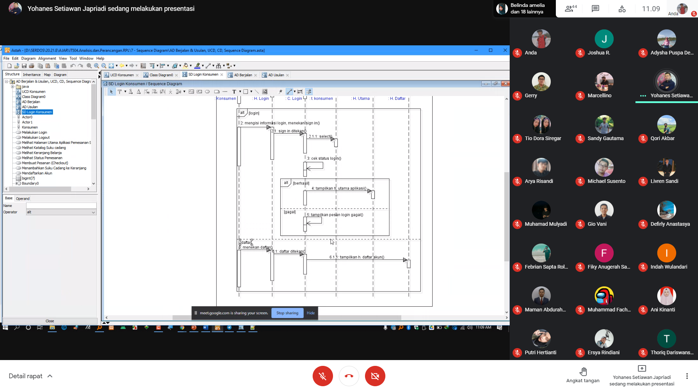
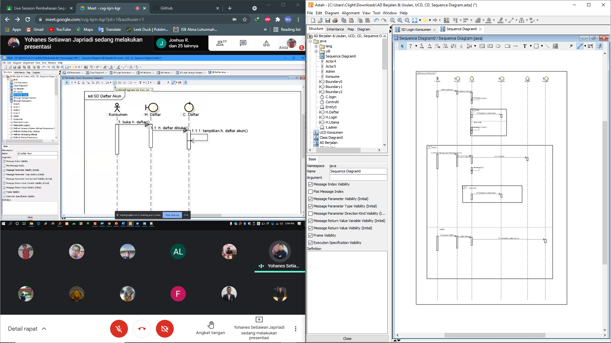

IM : 1811500025
Nama : Jimmy Ngui
Kelompok : TI6A
Hasil Saya Menyadur :
1.urutan proses pada page/form sistem merupakan Sequence diagram.
2.sequence diagram punya hubungan dengan deskripsi use case, rancgan layar dan classs diagram.
3.Ada lifeline berupa actor(user) ,boundary(form) ,control(code) ,entity(tabel) dan message(aktivitas di sistem).
4.Aktor di gambar dahulu
5.Aktor berinteraksi dengan boundary.
6.praktek membuat sequence diagram.
Miscellaneous :

